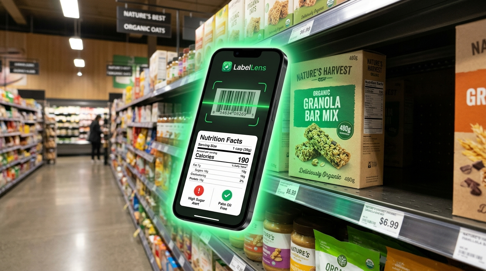

Don't Trust The Front of The Pack.
Scan The Back.
Food brands spend millions crafting misleading claims like "High Protein", "Wheat Goodness", or "Zero Cholesterol". LabelLens cuts through marketing tricks in 1 second—detecting hidden sugars, palm oil, harmful chemical additives (INS codes), and ICMR 2024 health ratings before you buy.

Experience LabelLens In Your Browser
Test real packaged products commonly found in Indian supermarket aisles. Switch dietary toggles to see how LabelLens dynamically guards your health.
Front-of-Pack Marketing vs. The Back-of-Pack Truth
Indian supermarket shelves are flooded with ultra-processed foods disguised as health foods. Here is what happens when you compare what brands say versus what LabelLens uncovers.
What The Brand Claims
-
"Wheat Goodness / Multi-Grain" — But refined wheat flour (Maida) makes up 75% of the total ingredient list.
-
"No Added Sugar" — Sweetened with concentrated Apple Juice Puree, Maltodextrin, or Invert Sugar Syrup.
-
"Zero Cholesterol" — Plant foods never contain cholesterol, but they are fried in artery-clogging Palm Oil!
-
"Only 40 Calories!" — Calorie count based on an unrealistically small 10g serving size nobody actually eats.
The Unvarnished Reality
-
Identifies Exact Grain Ratios — Exposes refined maida vs genuine whole grain percentages.
-
Unmasks 50+ Stealth Sugars — Highlights Maltodextrin (GI 110) and calculates actual teaspoons of sugar.
-
Detects Refined Palm Oil & Palmolein — Displays bold warning or confirms 100% Palm Oil Free compliance.
-
Automatic 100g Normalization — Mathematical parity so you can compare products fairly side-by-side.
50+ Hidden Sugar Aliases
Companies bypass consumer suspicion by splitting sugar into Maltodextrin, Invert Sugar Syrup, Liquid Glucose, Dextrose, and High Fructose Corn Syrup. LabelLens unmasks them instantly.
The Palm Oil Epidemic
Over 80% of packaged snacks in India are fried in cheap refined palmolein or palm oil, packed with saturated palmitic acid. LabelLens checks every single oil declaration.
The INS Code Mystery
Cryptic codes like INS 621, INS 102, INS 110, and INS 951 conceal MSG, coal-tar synthetic dyes, and artificial sweeteners. LabelLens decodes them in plain English.
Normalized Serving Math
Deceptive brands advertise numbers for a tiny 15g biscuit serving. LabelLens normalizes all nutrition data to 100g/100ml against ICMR 2,000mg sodium and FSSAI HFSS thresholds.
How LabelLens Works
No typing, no manual searching, and no nutrition degree required. Get authoritative transparency in 3 effortless steps.
Scan Barcode or Snap Label
Point your camera at the barcode for an instant 1-second cached lookup, or take a crisp photo of the back-panel Nutrition Facts table.
- • EAN-13, EAN-8, UPC Barcode auto-detection
- • Integrated flashlight for dark supermarket aisles
- • Works on crinkled chip bags and curved bottles
Multimodal AI Extraction
Gemini Vision parses all 12 nutritional metrics, extracts the full ingredients list, decodes chemical INS codes, and normalizes serving sizes.
- • Checks against FSSAI & ICMR 2024 category limits
- • Calculates teaspoons of sugar & % daily sodium quota
- • Detects hidden sugars, sweeteners, and synthetic dyes
Plain-English Health Verdict
Receive a clear Red (High HFSS), Amber (Moderate), or Green (Balanced) traffic light status along with a personalized match for your health goals.
- • Diabetic, Low-Sodium & Vegetarian guard checks
- • Allergen warnings (Gluten, Milk, Soy, Peanuts)
- • Saves to local history for offline grocery review
Engineered For Everyday Indian Shoppers
Every feature in LabelLens was designed to address specific nutritional challenges in Indian packaged grocery products.
1-Second Barcode Scanner
Instant hardware camera scanner powered by our self-growing local persistent cache. Popular Indian staples like Maggi, Parle-G, Lay's, Kurkure, and Haldiram's scan instantaneously without waiting.
AI Nutrition Table Scanner
No barcode? Just snap the back-of-pack printed table. Gemini Vision extracts calories, total fats, saturated fats, trans fats, added sugars, sodium, and ingredients directly from the photo.
Traffic Light Risk Rating
Color-coded health classification based on official 2024 FSSAI High Fat, Sugar & Salt (HFSS) cutoffs and ICMR-NIN dietary guidelines across 8 distinct Indian food categories.
Teaspoons of Sugar Calculator
Grams of sugar are difficult to visualize on the fly. LabelLens calculates the exact equivalent in household teaspoons of sugar so you know precisely what you are consuming.
Palm Oil & Palmolein Detector
Dedicated detection engine for refined palmolein, fractionated palm oil, and hydrogenated vegetable fats (vanaspati), or verifies a clean 100% Palm Oil Free badge.
INS & E-Number Decoder
Decodes 20+ common Indian packaged food additives: artificial sweeteners (INS 951 Aspartame, INS 955 Sucralose), synthetic colors (INS 102 Tartrazine), preservatives (INS 211), and MSG (INS 621).
Custom Health Profile Guards
Toggle specific guards for Diabetics (flags >5g sugar), Hypertension (flags >400mg sodium), Pure Vegetarian (flags gelatine/animal enzymes), and common allergens (Gluten, Peanuts, Soy, Milk).
100% Private & Offline History
No account creation, no email address, and zero tracking. Your health profile and past scan history are stored locally on your device via encrypted AsyncStorage.
Where & How To Use LabelLens
From crowded supermarket aisles to checking kids' school snacks at home, LabelLens gives you instant confidence wherever food choices happen.
Grocery Aisles & Kirana Stores
Standing in front of the biscuit or breakfast cereal rack at DMart, Reliance Smart, or your neighborhood store? Use the 1-second barcode scanner before adding boxes to your trolley.
Kitchen Pantry Audit
Go through your kitchen shelves, snack drawers, sauces, ketchup bottles, and noodle packets. Discover what hidden chemicals your family is eating daily.
Kids' Snacks & School Tiffin
Protect growing children from hidden artificial sweeteners, synthetic dyes (Tartrazine INS 102 linked to hyperactivity), and covert liquid sugars in malt health drinks and fruit juices.
Diabetes & Blood Pressure Care
Enable your Diabetic or Low-Sodium Health Profile in the app. LabelLens automatically flags any food containing over 5g added sugar, maltodextrin spikes, or sodium above ICMR limits.
Decode Supermarket Additives & INS Numbers
What is really behind the numbers on your food wrapper? Click any additive below to see its plain-English explanation.
Concentrated umami flavor enhancer. Often masked on packaging under terms like 'yeast extract' or 'hydrolyzed vegetable protein'.
Get LabelLens For Android Today
Download the lightweight, production-optimized APK built directly with Expo EAS. Hermes bytecode enabled, R8 ProGuard minified (~15 MB download), and completely ad-free.
.apk file.Frequently Asked Questions
Everything you need to know about LabelLens, our evaluation methodology, and installing the app.
LabelLens evaluates nutrients against the latest official FSSAI High Fat, Sugar & Salt (HFSS) draft regulations and ICMR-NIN 2024 Dietary Guidelines for Indians. Products breaching high-risk cutoffs for saturated fat, added sugar, or sodium receive a Red alert. Products meeting moderate criteria get Amber, while clean foods with balanced nutrients receive Green.
Yes, LabelLens is 100% free to download and use. It requires zero signup, no email, no phone number, and no passwords. All your scan history and health profile settings are stored strictly offline on your own device.
Google Lens only extracts raw text or searches the web. It cannot normalize serving sizes, calculate household teaspoons of sugar, detect hidden chemical INS additives, or evaluate nutrients against Indian ICMR benchmarks. LabelLens translates complicated chemical jargon into clear actionable verdicts in seconds.
LabelLens only requests access to your Camera so it can read barcodes and capture photos of nutrition labels. It does not ask for contacts, location, storage access, or device identifiers.
Tap the "Download Standalone APK" button to go to the official Expo EAS build page. Download the APK file. When opened, Android may show a standard safety prompt asking you to allow installation from your browser (Chrome/Firefox). Enable the toggle, tap "Install", and you're ready to scan!
LabelLens includes dual scanning modes. If an obscure or regional barcode is not yet indexed, simply switch to the "Photo Scanner" tab and snap a photo of the nutrition table on the back panel. Our multimodal AI will parse and evaluate the label instantly.